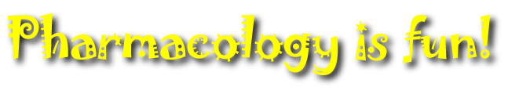

To provide a scientific basis for the rational use of drugs in animals, and to gain a thorough knowledge of those toxicoses which occur frequently in New Zealand
By the end of the course you should be able to:
The course organiser is Dr. Paul Chambers (office 6.22), telephone 7438. If you have any problems or suggestions for the course, contact me. Lectures will be given by several staff of the Institute of Veterinary, Animal & Biomedical Sciences: Kathy Parton, Tim Parkinson
Why bother to learn pharmacology?
Assessment
Work groups
Textbooks
Journals
Lectures
Pharmacology - the study of drugs - is probably the most important (and certainly the most interesting) subject you will study as part of the vet course. When you qualify, no matter what sort of veterinary work you do, you will need to know something about drugs.
In general practice, when you are presented with an animal, you have a number of options:
1 - do nothing. This is the commonest option to avoid pharmacology, but is not very popular with clients.
2 - give drugs. Most common, and the basis of medicine.
3 - surgery. Most animals will not stand still while you stick the knife in unless you give them anaesthetic or analgesic drugs first.
4 - alter the diet. Often involves food supplements, which are well nigh indistinguishable from drugs.
5 - euthanasia. Usually from an overdose of drugs.
There’s no getting away from pharmacology!
